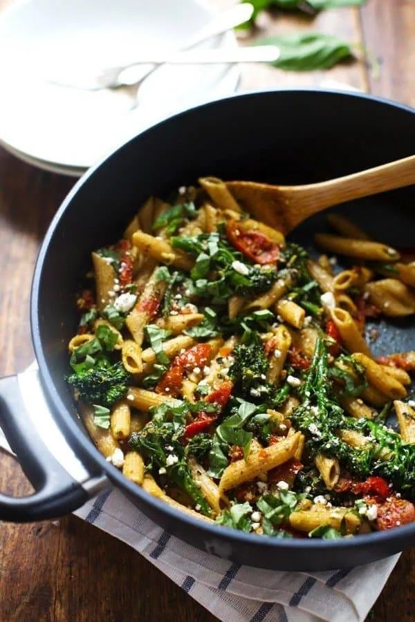

Pesto Chicken Pasta

- Meal
- Dinner
- Serves
- 6
- Protein
- chicken
- Cook
- stovetop · 20 min active / 35 min total · easy
- Make-ahead / leftovers
- no / yes
- Mediterranean
- yes
- WW tier
- moderate
- Status
- Trying out (probation)
Hot pesto penne with chicken, broccoli, and cherry tomatoes. Dinner, not the cold Creamy Pesto Pasta Salad — no mayo, no yogurt dressing.
Ingredients
- 1.5 lb boneless chicken breasts, cut into 1-inch pieces
- 1 lb penne (whole wheat if Aldi has it)
- 4 cups broccoli florets (fresh or frozen)
- 1 pint cherry tomatoes, halved
- 2 cloves garlic, minced
- 1/2 cup store-bought basil pesto (Aldi jar is fine)
- 1/3 cup crumbled feta
- Juice of 1 lemon
- 1 Tbsp olive oil
- Salt and pepper
- Optional: fresh basil
Method
- Season the chicken with salt and pepper. Heat olive oil in a large skillet over medium-high. Cook the chicken until browned and 165°F, about 6–8 minutes. Move to a plate.
- Meanwhile, boil the penne in salted water. In the last 2 minutes, add the broccoli (frozen is fine — it thaws in the pot). Drain, saving 1/2 cup pasta water.
- Return pasta and broccoli to the pot over medium. Add tomatoes and garlic; cook 1–2 minutes until the tomatoes soften.
- Stir in pesto, lemon juice, half the feta, the chicken, and a splash of pasta water until it looks saucy, not dry.
- Off heat, remaining feta and basil if you have it.
Notes
- Pinch of Yum's lemon pesto penne is vegetarian and 8 oz pasta. Scaled to 1 lb pasta + 1.5 lb chicken for a household dinner. Kirkland "oven roasted tomatoes" swapped for a pint of cherry tomatoes (Aldi/Sam's).
- Store-bought pesto is the jar — don't buy pine nuts for a one-off homemade batch.
- Not Creamy Pesto Pasta Salad: that one is cold, mayo/yogurt dressing, chickpeas, artichokes, bocconcini. This is hot, olive-oil pesto, broccoli.
- Mediterranean ✓: pesto's olive oil, poultry, broccoli + tomato, whole-wheat pasta if you grabbed it (regular penne still 3 of 4).
- moderate: pesto is oily and there's feta, but no cream cheese / heavy cream (Budget Bytes' creamy pesto chicken pasta goes that route — skipped so this isn't a heavy Alfredo cousin).